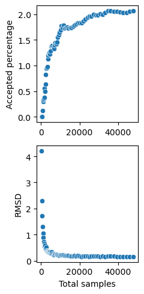
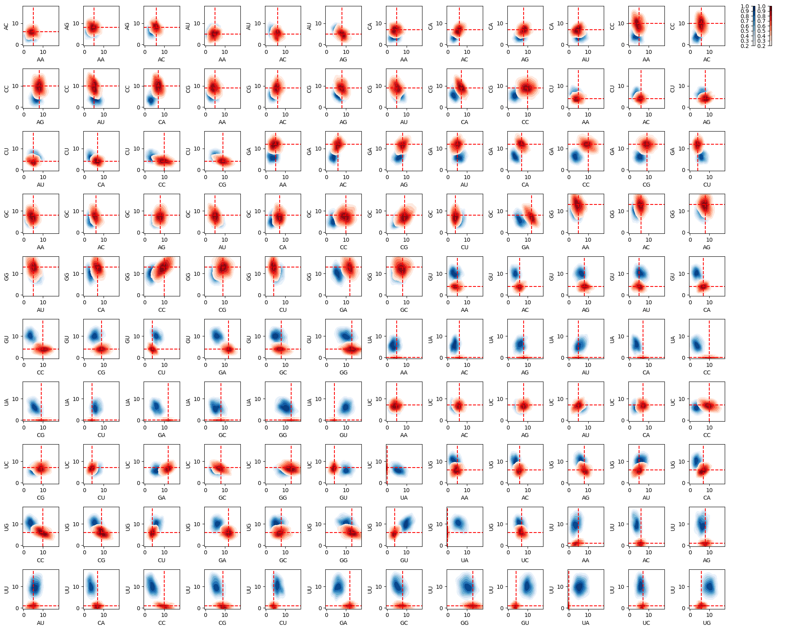

Online resources and software environment
This document is hosted online as Jupyter notebook with precomputed results. Download this file to view, edit and run examples in Jupyter.
We recommend to install all required software using Mamba (or Conda) and PIP.
mamba create -n infrared -c conda-forge infrared jupyter jupytext matplotlib seaborn graphviz
mamba activate infrared
pip install graphviz
mamba deactivate infrared
Start the Jupyter notebook server after activating the environment
mamba activate infrared
jupyter notebook
The original sources are part of the Infrared distribution and hosted on Gitlab (in Jupytext light Script format).
Targeting dinucleotide frequencies by MDBS
We demonstrate sampling of sequences targeting specific dinucleotide frequences and additional requirements; in this example, compatibility with an RNA target structure.
The targeting of dinucleotide frequencies is performed using the multi-dimensional Boltzmann sampling functionality of Infrared's Sampler (aka MultiDimensionalBoltzmannSampler) class.
Import modules + define timing function
import infrared as ir
from collections import Counter
import random
import time
def report_time(f,desc=""):
start=time.time()
res=f()
desc = "" if desc=="" else f' ({desc})'
print(f'Time{desc}: {time.time()-start:0.2f}s')
return res
Preliminaries
alphabet = "ACGU"
dimers = [ x+y for x in alphabet for y in alphabet ]
Network function for dinucleotide counting
For use in the model, define counting of dinucleotide frequencies. The generated class will be constructed by the position \(i\) (to count the dimer at positions \(i\), \(i+1\)) and the respective dimer as string ("AA", "AC", ...).
Note how the dimer argument is passed from the first lambda function (‘init’), which specified the construction and returns the dependency list [ \(i,i+1\)] , to the second one (‘value’), which evaluates the function given the values of variables \(i\) and \(i+1\).
ir.def_function_class('DinuclFreq',
lambda i,dimer: [i,i+1],
lambda x,y,dimer: rna.values_to_seq([x,y])==dimer
)
Input instance(s)
seq0 = "UUUCGUUCACCCUCAUUUGAGGGCGCAGUUCGAGUCAUACCAUGGAACGGGGGAUGGC"
struct0 = "...[[[[[.(((((....)))))..........(((((.((...]]]]]))..)))))"
seq = "CACUGUCGACUCAGUCAGUGAGUCGCGACUGACUGCAUCGCGACUACGUCAGUCGUACGAUCUAUUGUGCGAUAUCGCGCGAUAUAGCUAUGCG"
struct = None
seq = "GGUUCAUCGAGAGUGGCGGAGGGACUGGCCCCAUGAUGCCACGGCAACCUCUCCCGCGGGGAGAACGGUGCCAAAUCCAGCGGACACUCGGUCCGAGAGAUGAAGC"
struct = "(.((((((....((((((..(((.[[[[.)))....))))))((((.((((((((...))))))..))))))....]]]](((((.....)))))...)))))).)"
print("Sequence length",len(seq))
Sequence length 106
Obtain target frequencies from the sequence; print the counts
tgtfreqs = Counter(seq[i]+seq[i+1] for i in range(len(seq)-1))
print(tgtfreqs)
Counter({'GG': 13, 'GA': 12, 'CC': 10, 'CG': 9, 'AG': 8, 'GC': 8, 'UC': 7, 'CA': 7, 'UG': 6, 'AC': 6, 'AU': 5, 'AA': 5, 'GU': 4, 'CU': 4, 'UU': 1})
Feature network model for the design task
Generate model
The model consists of
- \(n\) (sequence length) many variables, each with domains 0..3 (enconding the nucleotides);
- constraints to guarantee compatibility with the given structure;
- functions counting the different dinucleotides; defining one feature per dimer.
n = len(seq)
model = ir.Model(n,4)
if struct is not None:
model.add_constraints(rna.BPComp(*bp) for bp in rna.parse(struct))
for dimer in dimers:
model.add_functions([DinuclFreq(i,dimer) for i in range(n-1)],dimer)
Draw samples (without targeting)
This is mainly done, to check run-times for generating a number of samples (as is done by the multi-dimensional Boltzmann sampling strategy in every iteration). As well report the treewidth of the network (as determined by the sampler).
nsamples=100
sampler = report_time(lambda:ir.Sampler(model,lazy=False),'Construction')
print("Treewidth:",sampler.treewidth())
_ = report_time(lambda:[rna.ass_to_seq(sampler.sample()) for _ in range(n)],'Sampling')
Time (Construction): 0.76s
Treewidth: 4
Time (Sampling): 0.03s
Draw targeted samples
Generate sampler, set parameters for the multi-dimensional Boltzmann sampling strategy and set the targets.
sampler = ir.Sampler(model,lazy=True)
sampler.samples_per_round = 200
sampler.tweak_factor = 0.05
tolerance = 2
for dimer in dimers:
sampler.set_target(tgtfreqs[dimer],tolerance=tolerance,featureid=dimer)
def callback(total,accepted,fstats):
rmsd = sampler.rmsd(fstats.means(),sampler.model.features)
the_statistics.append({'samples':total, 'rmsd':rmsd, 'accepted':accepted})
sampler.callback = callback
Actually, draw the targeted samples (and stop run time.)
sampler.verbose = False
the_statistics = list()
the_samples = list()
print_samples = None
stats = ir.FeatureStatistics()
def draw_samples(n):
for i in range(n):
sample = sampler.targeted_sample()
feature_values = {dimer:model.eval_feature(sample,dimer) for dimer in dimers}
stats.record_features(model.features,feature_values)
if print_samples:
line = rna.ass_to_seq(sample)
for dimer,freq in feature_values.items(): line += f" {dimer}:{freq}"
if type(print_samples)!=int or (i+1)%print_samples==0:
print(i+1, line)
the_samples.append(sample)
report_time(lambda:draw_samples(1000))
Time: 309.44s
Finally, report some statistics and learned weights
print("Targets",[f"{dimer}:{tgtfreqs[dimer]}" for dimer in dimers])
print("Stats ",stats.report())
print("Weights",{k:f'{f.weight:.3f}' for k,f in sampler.model.features.items()})
Targets ['AA:5', 'AC:6', 'AG:8', 'AU:5', 'CA:7', 'CC:10', 'CG:9', 'CU:4', 'GA:12', 'GC:8', 'GG:13', 'GU:4', 'UA:0', 'UC:7', 'UG:6', 'UU:1']
Stats AA=4.82 +/-1.32 AC=5.92 +/-1.22 AG=8.19 +/-1.26 AU=5.08 +/-1.24 CA=7.03 +/-1.24 CC=10.03 +/-1.34 CG=9.11 +/-1.25 CU=4.15 +/-1.17 GA=11.88 +/-1.23 GC=7.77 +/-1.30 GG=12.94 +/-1.38 GU=3.88 +/-1.16 UA=0.35 +/-0.58 UC=6.86 +/-1.17 UG=5.90 +/-1.23 UU=1.11 +/-0.95
Weights {'AA': '0.835', 'AC': '0.516', 'AG': '0.402', 'AU': '-0.121', 'CA': '0.777', 'CC': '0.419', 'CG': '-0.080', 'CU': '-0.936', 'GA': '1.560', 'GC': '0.522', 'GG': '0.414', 'GU': '-0.678', 'UA': '-1.588', 'UC': '0.097', 'UG': '-0.194', 'UU': '-1.943'}
Plots sampling effectivity
import matplotlib.pyplot as plt
import seaborn as sns
fig, (ax1, ax2) = plt.subplots(2, 1, figsize=(2.5,5))
sns.scatterplot(x=[row['samples'] for row in the_statistics], y=[100*row['accepted']/row['samples'] for row in the_statistics],ax=ax1)
ax1.set_ylabel("Accepted percentage")
sns.scatterplot(x=[row['samples'] for row in the_statistics], y=[row['rmsd'] for row in the_statistics],ax=ax2)
ax2.set_xlabel("Total samples")
ax2.set_ylabel("RMSD")
fig.tight_layout()
plt.savefig('mdbs_run.pdf')
plt.show()

Distribution plots
import math
def distribution_heatmaps(model,n,feature_list,fig,*,limits,labels=None,targets=None,ax=None,cmap="Blues"):
sampler = ir.Sampler(model)
samples = [sampler.sample() for _ in range(n)]
def eval_features(sample):
return {f:model.eval_feature(sample,f) for f in feature_list}
features = [eval_features(sample) for sample in samples]
if labels is None:
labels = feature_list
k = len(feature_list)
the_plots = [(i,j) for i in range(1,k) for j in range(0,i)]
nplots = len(the_plots)
dimx = int(math.sqrt(nplots))
dimy = nplots // dimx
the_cells = [(i,j) for i in range(0,dimx) for j in range(0,dimy)]
if ax is None:
ax = fig.subplots(dimx,dimy+1,
squeeze=False,
width_ratios=[1]*dimy+[1]
)
for x in range(dimx):
for y in range(dimy+1):
if (x,y) not in the_cells[:nplots]:
ax[x][y].axis("off")
for idx,(i,j) in enumerate(the_plots):
fi = feature_list[i]
fj = feature_list[j]
cax = ax[the_cells[idx][0]][the_cells[idx][1]]
sns.kdeplot(x=[f[fj] for f in features],y=[f[fi] for f in features], ax = cax,
cmap=cmap, levels=8, thresh=0.2, cbar = False, fill=True)
if targets:
cax.axhline(y = targets[fi], color = 'red', linestyle = 'dashed')
cax.axvline(x = targets[fj], color = 'red', linestyle = 'dashed')
cax.set_ylabel(labels[i])
cax.set_xlabel(labels[j])
cax.set_ylim(limits[i])
cax.set_xlim(limits[j])
plt.colorbar(plt.cm.ScalarMappable(cmap=cmap),ax=ax[0][dimy],
pad=0.4,
location="left",
boundaries=[0.2+i/10 for i in range(9)],
values=[i/8 for i in range(1,9)])
return ax
sel_dimers = dimers
limits=[(-0.5,18)]*len(sel_dimers)
n = 500
k=len(sel_dimers)
fig = plt.figure(figsize=(20,16))
ax = distribution_heatmaps(model,n,sel_dimers,fig,limits=limits,cmap="Blues")
distribution_heatmaps(sampler.model,n,sel_dimers,fig,limits=limits,
targets=tgtfreqs,
ax=ax,cmap="Reds")
fig.tight_layout()
plt.savefig('mdbs_heatmaps.pdf')
plt.show()

 1.9.7
1.9.7